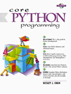

| See All Titles |
|
 Front Matter Table of Contents About the Author Examples |
ISBN: 0-13-026036-3, 816 pages
Python is an Internet and systems programming language that is soaring in popularity in today's fast-paced software development environment, and no wonder: it's simple (yet robust), object-oriented (yet can be used as a procedural language), extensible, scalable and features an easy to learn syntax that is clear and concise. Python combines the power of a compiled object language like Java and C++ with the ease of use and rapid development time of a scripting language. In fact, its syntax is so easy to understand that you are more likely to pick it up faster than any of the other popular scripting languages in use today! In Core Python Programming, Internet software engineer and technical trainer Wesley Chun provides intermediate and experienced developers all they need to know to learn Python-fast. Like all Core Series books, Core Python Programming delivers hundreds of industrial-strength code snippets and examples, all targeted at professional developers who want to leverage their existing skills! In particular, Core Python Programming presents numerous interactive examples that can be entered into the Python interpreter right in front of you! Finally, we present a chapter that shows you step-by-step how to extend Python using C or C++.
Coverage of the Python standard module library and client-server application development includes comprehensive introductions to the following topics in Python programming:
Finally, we provide an introduction to the new features introduced in Python 1.6. These include Unicode string support, the new function invocation syntax which lets the caller provide a tuple of positional arguments and/or a dictionary of keyword arguments, and the new string methods. We also provide a glimpse into features that will only be found in the newer 2.0 release. Every Core Series book:
Core Python Programming delivers:
CD-ROM includes complete Python source code and documentation distributions for Unix/Linux along with binaries for Windows and Macintosh platforms plus source code for all examples in the book. |
| Last updated on 9/14/2001 Core Python Programming, © 2002 Prentice Hall PTR |
© 2002, O'Reilly & Associates, Inc. |